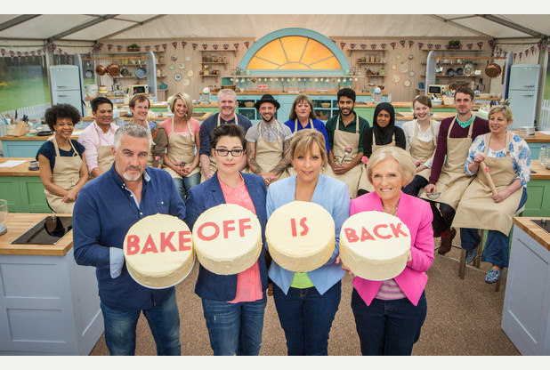

The Food Commandments
Top Chef: Food competition gathering chefs from across America to see who can claim the title of Top Chef.
Why I Love This Show: I have been along for the ride from the very beginning. When Tom Colicchio said in Season 1 after his initial introduction said, "I am not your mentor" I knew this was the show for me. With no pretence in this show being about the well-being of the cheftestants, this show in its simplicity oits the chefs against each other every week in grueling conditions to see who can rise to the occasion and earn the right to be the best. At the time of Top Chef's premiere, food competition shows were limited to "Iron Chef America" (which premiered one year before). This show proved that people were interested in watching chefs cook "restaurant quality" food and learn a little something along the way about the restaurant industry and the life of a chef.
Recommended For: Everyone! Give it a chance!
What I Could Do Without: Last Chance Kitchen and Padma's attitude in the later seasons.
The Great British Bake Off: Mini-series that gathers amateur bakers to find the best bakers in Britian.
Why I Love This Show: While it is a competition, the focus is on the baked good and the witticisms of the co-hosts. Front and center is the bakers' creativity in the signature bake, their skill-set and consistency in the technical bake, and the limits of their abilities in the showstopper bake. I can see why the the show has one of the highest viewer ratings in the United Kingdom. No soggy bottoms here!
What I Could Do Without: The difficulty with finding the episodes outside of the UK (same problem with Top Chef Canada). Youtube is good to view some episodes and PBS has started airing episodes under the alternative title The Great British Baking Show. Very briefly, during the summer of 2013, there was an American version of the show titled The American Baking Competition. Medicore marketing by CBS and Paul Hollywood's torid love affair with his co-judge ruined the show's chance for survival.
Good Eats: Watch Alton Brown discover just what makes each ingredient (or dish) shine.
Why I Would Love This Show: He is determined to teach his audience to not only cook but care deeply about ingredients and execution. His methods often include homemade tools, painstaking step-by-step instructions and explainations, and funny plot lines and devices (highly recommend Iron Chef Junk Yard edition battle bacon).
What I Could Do Without: The show's untimely end in 2011. *weeps uncontrollably*
Recommended For: everyone including detailed-oriented people and those with a sense of humor and those looking to impress their chemistry teacher.
Other Recommendations
Martha Stewart: She has done jail time. She roasted Justin Beiber alongside Snoop Dogg. She is the only TV personality that has street cred and can talk about imorted Turkish linen. Furthermore, her show takes a holistic approach to food by emphasizing presentation and providing much needed advice about decor. Great for those who need advice on hosting dnner parties.
Martin Yan: Before nose-to-tail cooking was trendy, Martin Yan's show on PBS stressed the point of flavor and food waste. Throw away onion skins? "No", he would say. "Don't throw away. Save and use for stock!" His resourcefulness is inspiring.
These movies share a common theme. Individuals with diverse backgrounds using the art of cooking to shape their identity.
Chef: A man (Jon Favreau) reconnects with his son and rediscovers his passion for cooking.
Why this Movie is Great: The movie is an accurate depicition of chefs and the restaurant industry. Chef 101. Through Favreau's protrayal of a disillusioned chef, we see some of the fustrations of culinary arts as a careeer choice. Food truck business, the difficulty of balancing work-home life, the importance of social media, the need to travel to seek flavors for dish inspiration, and the impact of answering to stakeholders (they like to call themselves "restauranteurs" versus your creativity. Also, there are some great food shots; everyone talks about the grilled cheese scene.
What the Movie Didn't Need: Robert Downey Jr. I adore RDJ; he just doesnt fit in this movie.
Recommended For: Everyone, except there a good amount of cursing in this film.
No Reservations: A woman (Catherine Zeta-Jones) learns to balance her career in the restaurant industry and her life with her niece.
Why this Movie is Great: The audience learned about the long hours chefs work and the strain the career can place on a person's personal life. We witnessed the tug-of-war that occurs between a Head (or Executive) Chef and the restaurant owner (often times these roles are not filled byt he same person). Unlike the movie Favreau's Chef, this movie glimpses not only into the competition between chefs, but also the struggle as a woman in the restaurant industry. (Aaron Eckhart's role in this movie was just a cherry on an otherwise great sundae).
Recommended For: Rom-com fanatics, definitely. This is the movie you will force your significant other to see and they will secretly love it despite the protests.
Other Recommendations
Ratatouille: All audiences. Great for kids. Very colorful. The movie teaches why passion is an important ingredient in cooking.